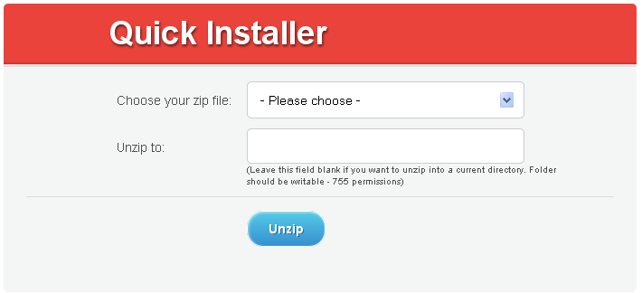
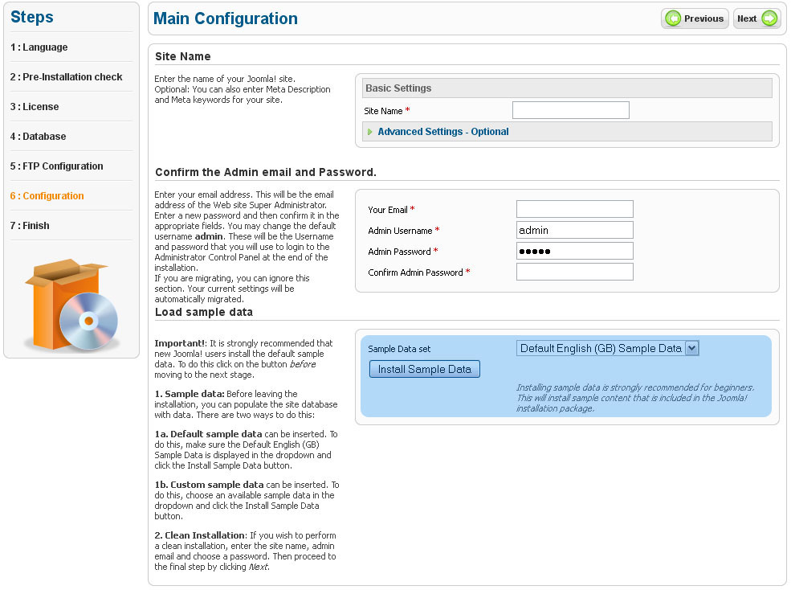
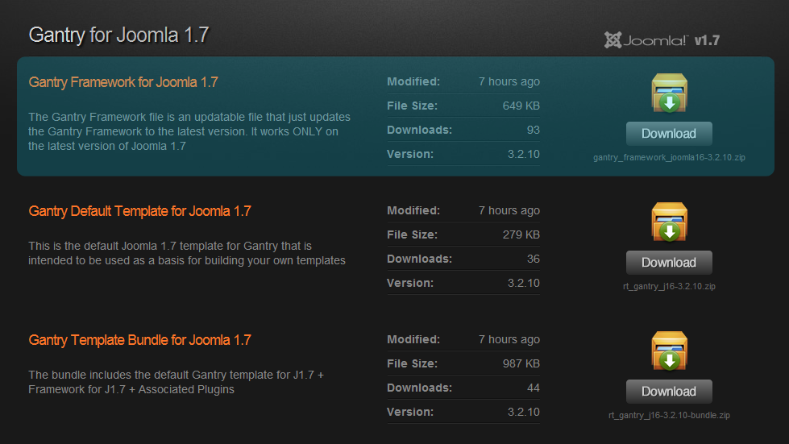
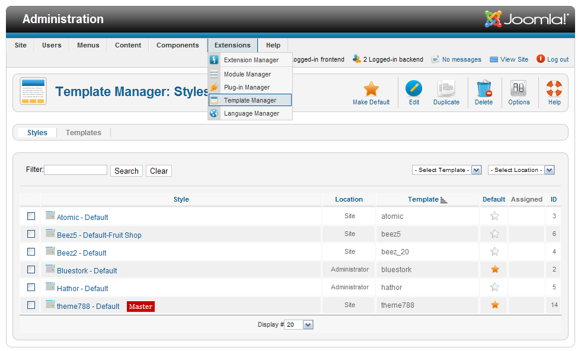
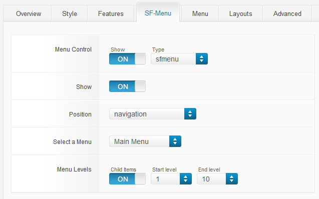

When the Joomla package is downloaded you need to extract the files from the archive. This can be done using the default archive manager or using such applications as WinZip (Windows) or Stuffit Expander (MAC).
Then you need to create a database to store Joomla CMS data. You can create database using your hosting control panel or the phpMyAdmin too in case you are using local server. Feel free to check the details tutorial on how to create database.
This installation option is used if you doesn't have Joomla installation on your server. Fullpackage.zip archive used in this guide contains Joomla engine and the theme so you don't need to upload Joomla CMS package separately.
As soon as the template is downloaded and unzipped you should upload the archive joomla/fullpackage.zip using any FTP software like Filezilla or the Filemanager in your hosting control panel. The detailed tutorial on how to upload files can help you in case of any difficulties.
When that is done please upload the filejoomla/unzip.php from the template package to the server into the same directory as the previous archive.
As soon as you finish please open your site in the browser and add the file name - unzip.php to the URL. It should look like this: yourwebsite.com/unzip.php
This is what you get:

In the drop-down list "Choose your zip file" please select fullpackage.zip and click "Unzip". It will start to uncompress the files on your server into the same directory. It will take a little while.
As soon as it is unzipped, you will see the list of files. Please open your site in the browser, - yourwebsite.com and start Joomla installation.
On Step 6 in your installation - "Main Configuration" it is necessary to select "sample_theme###" (where ### is the number of your theme) from the select box and click "Install Sample Data" button.
It is vitally important to install Sample data. Please do not ignore this step

As soon as the installation is complete, the template with the default content will automatically be activated on your site and will look like the demo on our template preview page.
Please note: Installing template sample data you'll have another user with Demo User privileges (full access) added to your database. The sample user login is "demo", password - "demo123".
You can delete Demo User though the Joomla administration panel in the "Users > Users Manager". In case you are planning to use sample data we recommend you to change Demo User user login and password.
This installation option is used in case you already have a Joomla CMS installed on your server and want to install Joomla theme with sample data. The sample data will make your Joomla website appear as at the template preview page with all sample articles, modules and site testing installed.
Please note: Installing of the Joomla theme sample data will replace all your Joomla website settings, modules and articles. Do not use this step if you have a ready Joomla website and just want to install the theme.
Template installation
First of all you need to install the Joomla template and Framework. This can be done through the Joomla administration panel. Please install the template following the directions in Getting started if you have the site up part of this manual
Our templates are supplied with the sample pages, modules and configuration settings. In other words to make the template look as at the preview you need to install and configure the modules.
Sample data installation
If you want your site look like the demo you should install the dump.sql file.
Warning! Please note: the sample data SQL file should be installed only when you are done installing all additional modules and components
Warning!
Import .sql file ONLY if your site is a clean installation of Joomla! CMS, and you have not yet created any content, articles, modules, etc. This step will erase all the work you've already done to your site. Otherwise, please skip to the - "Manually configuring template modules" step
To install dump.sql file you should do the following:
Before the dump import please make sure to change the default database prefix in the dump file ("jos_") to the tables prefix which is used in your Joomla database. In order to find out your Joomla database prefix please login into Joomla Admin, "Global Configuration" -> "Server" and find "Database Tables Prefix".
Then open your dump.sql file with any text editor (preferably Dreamweaver or Notepad) and replace all instances of "jos_" with your Joomla database prefix in the entire document using the Find and Replace tool (usually the Ctrl+H hot key). E.g.: xyz_
Open your PhpMyAdmin tool (which is part of your Hosting Control Panel).
Select the database you created for Joomla! CMS.
Select "IMPORT" option and click "Browse" button
Navigate to the "sources" folder of the template and select dump.sql file.
Press "GO" button.
To complete the sample data installation please open the template package, go to the "sources/to root directory/" directory and upload it's content to your Joomla installation root.
If you don't have much experience with PhpMyAdmin tool, please check this tutorial on how to complete the steps above:
Getting started if you have the site up
The template you ordered is provided with bundle install packages that allow you to install the template and all required extensions in several clicks.
Framework Installation
Gantry Framework and all associated plugins can be installed using the "gantry_bundle.zip" package located in the template "joomla" directory.
Installing through the Joomla! CMS Extensions Manager:
In the administration section of your Joomla! website go to the Extensions - Extensions Manager.
Then in the "Upload package file" section open the Package File upload dialogue box by clicking on the "Browse" button.
Find the "gantry_bundle.zip" archive from the "sources" folder in your downloaded template package, click Open and then click "Upload & install".
Please note that you may find Gantry Framework to be outdated as of the time of installing your theme. In this case please download the latest version of gantry framework package from the official website at http://www.gantry-framework.org/download

Please make sure you are downloading Gantry framework for Joomla 2.5. The package should be called gantry_joomla_framework-###.zip
Template installation
Joomla theme can be installed using "theme###.zip" archive located in the "joomla" directory of your template package. The archive can be installed as any other Joomla extension through the "Extensions Manager" interface as shown above.
Template Activation
When you are done with the installation you should activate it. Open the Joomla! administration section, then using the main menu please, go to the "Extensions - Template manager" page.
Then choose the newly installed template by clicking the checkbox and click "Make Default" button in the upper right corner. This will enable your template as a default one for your site.
Then click the template name to enter the template configuration page. You should assign the template to the website pages. To do this click "Toggle Selection" button in the "Menus assignment" section.

Third-party extensions installation
The template may have some modules that are not included into the default Joomla! installation and should be installed manually. All extensions are stored in the single bundle archive that is called "pkg_bundle.zip" and located in the "sources" directory of your template package. The installation procedure is the same as for the template bundle package install.
From the Joomla! administration panel select "Extensions - Extensions Manager".
Click the Browse button and select "pkg_bundle.zip" package from the template "sources" folder.
Click the "Upload & Install" button.
Then go to the "Extensions - Module manager" page. The newly installed module should appear in the modules list.
Open the module and set the configuration options according to the Modules Configuration table below.
You are free to install all extensions manually. In this case please extract "pkg_bundle.zip" archive and open "packages" folder. There you'll be able to find all third party extensions that are recommended for your particular template.
Warning! In case you are having issues with the bundle package install please extract files from the package using your archive manager, open "packages" folder and upload all extensions one-by-one using Joomla Extensions Manager interface.
K2 Component
K2 is a content component for Joomla! with CCK-like features developed by JoomlaWorks. It allows you to manage your content in a multitude of ways quite easily. You can publish blog, catalog, directory and magazine styled sites using a single component and all in one site. Our Joomla templates are designed to be used with K2 component. K2 component is included into the "pkg_bundle.zip" package from the template "sources" folder so there is no need to install it separately.
If you have Joomla content and is ready to move to K2 you need to import your Joomla articles to K2. Please do the following:
Open K2 from the Joomla "Component" Menu
Click to "Import Joomla! Content" button in the top, right hand corner of the К2 Dashboard.
Click on the "Parameters" icon in the top, right hand corner of the К2 Dashboard and set your default criteria for ALL k2 content.
Please note: Importing Joomla content in to K2 can be used to transfer the Joomla articles into K2. Skip this step if you don't have any Joomla articles.
Modules Configuration
In the Joomla! administration section please, go to "Extensions - Module Manager";
Open each module from the list below, assign it to the given position and set the configuration options from the following table:
1 - Login Form
Type: mod_login
Position: modal
Class Suffix:
Show Title: yes
Order: 1
Pages: All
Additional info:
2 - Breadcrumbs
Type: mod_breadcrumbs
Position: breadcrumbs
Class Suffix:
Show Title: no
Order: 1
Pages: All
Additional info:
3 - Search
Type: mod_search
Position: navigation
Class Suffix: navbar-search pull-right
Show Title: no
Order: 1
Pages: All
Additional info:
4 - Copyright
Type: mod_footer
Position: copyright
Class Suffix:
Show Title: no
Order: 1
Pages: All
Additional info:
5 - Archived Articles
Type: mod_articles_archive
Position: aside-right
Class Suffix:
Show Title: yes
Order: 2
Pages: Blog Blog. Donec eu elit in nisi Blog. In neque arcu vulputate Blog. Quisque gravida purus vitae Blog. Vivamus luctus lectus sit Blog. Vivamus congue turpis in augue Blog. Curabitur eu dignissim velit Archives
Additional info:
6 - User Menu
Type: mod_menu
Position: header
Class Suffix:
Show Title: no
Order: 1
Pages: All
Additional info:
7 - Superfish Menu
Type: mod_superfish_menu
Position: navigation
Class Suffix: navigation
Show Title: no
Order: 1
Pages: All
Additional info:
8 - Camera Slideshow
Type: mod_camera_slideshow
Position: showcase
Class Suffix:
Show Title: no
Order: 1
Pages: Home
Additional info:
9 - Social Media
Type: mod_menu
Position: copyright
Class Suffix:
Show Title: no
Order: 1
Pages: All
Additional info:
10 - Login Form
Type: mod_login
Position: aside-right
Class Suffix: aside
Show Title: yes
Order: 3
Pages: Blog FAQs Testimonials Blog Categories Blog. Donec eu elit in nisi Blog. In neque arcu vulputate Blog. Quisque gravida purus vitae Blog. Vivamus luctus lectus sit Blog. Vivamus congue turpis in augue Blog. Curabitur eu dignissim velit Archives
Additional info:
11 - Search
Type: mod_search
Position: aside-right
Class Suffix: aside
Show Title: yes
Order: 4
Pages: FAQs Testimonials
Additional info:
12 - Categories
Type: mod_articles_categories
Position: aside-right
Class Suffix:
Show Title: yes
Order: 1
Pages: Blog Blog. Donec eu elit in nisi Blog. In neque arcu vulputate Blog. Quisque gravida purus vitae Blog. Vivamus luctus lectus sit Blog. Vivamus congue turpis in augue Blog. Curabitur eu dignissim velit
Additional info:
13 - Our Team
Type: mod_articles_news_adv
Position: mainbottom
Class Suffix: team
Show Title: yes
Order: 1
Pages: About
Additional info:
14 - carouFredSel
Type: mod_caroufredsel
Position: feature
Class Suffix:
Show Title: yes
Order: 1
Pages: Home
Additional info:
15 - Article Single
Type: mod_articles_single
Position: aside-left
Class Suffix:
Show Title: yes
Order: 1
Pages: About
Additional info:
16 - Komento Activities
Type: mod_komento_activities
Position: aside-right
Class Suffix:
Show Title: yes
Order: 1
Pages: Blog Blog Categories Blog. Donec eu elit in nisi Blog. In neque arcu vulputate Blog. Quisque gravida purus vitae Blog. Vivamus luctus lectus sit Blog. Vivamus congue turpis in augue Blog. Curabitur eu dignissim velit
Additional info:
17 - Komento Comments
Type: mod_komento_comments
Position: aside-right
Class Suffix:
Show Title: yes
Order: 1
Pages: Blog Blog Categories Blog. Donec eu elit in nisi Blog. In neque arcu vulputate Blog. Quisque gravida purus vitae Blog. Vivamus luctus lectus sit Blog. Vivamus congue turpis in augue Blog. Curabitur eu dignissim velit
Additional info:
18 - mod_twitter_widget
Type: mod_twitter_widget
Position: aside-left
Class Suffix:
Show Title: yes
Order: 1
Pages: All
Additional info:
After all the necessary changes are applied save the values of each module by clicking the "Save & Close" button in the upper right corner.
If the above table is missing the module for the top navigation menu please check the Installing Menu step of this manual.
Warning! ATTENTION: By default Joomla! 2.5 installation comes with only couple of modules installed. Therefore to make your Joomla! site look like our live demo please, install all necessary modules through the administration section of your site. You may also need to add all the menu items and articles by yourself.
Images preview
To display the same images as at the template preview page, please, go to the “sources/to root directory/” folder and copy all the folders to your Joomla! installation directory.
Installing menu
Be default this Joomla templates use the mod_superfish_menu module to display the top navigation menu. It can be installed as any other third party module using the Joomla administration panel (Extensions > Extensions Manager)
Mod_superfish_menu module can be activated and configured at the template settings page (Extensions > Templates Manager ). Select your template and at the appeared page click Menu tab.

How to add new Custom HTML modules to your template
Some templates may contain the custom HTML modules that should be installed manually.
Note: If you performed the dump.sql file import you may skip this step.
Before working with Custom HTML modules we highly recommend to disable the Joomla WYSIWYG editor.
Please, enter the Joomla! administration panel, and go to the Site → Global Configuration. Find the option "Default Editor" and select "No Editor". Default Joomla! WYSIWYG editors may modify the custom HTML module's code and cause you some issues.
Then go to the Extensions → Module Manager page. Press the "New" button in the top right corner
select "Custom HTML";
in the "Title" field type the title of your new module;
in the "Position" field choose the correct position for the new module from the Modules Configuration table above (Step 4);
in the "Module Class Suffix" field please, type the appropriate class suffix specified in the Modules Configuration table;
in the "Custom Output" text area please, put the HTML code provided in the appropriate file from the template "sources" folder. The correct filename could be found in the Modules Configuration table.